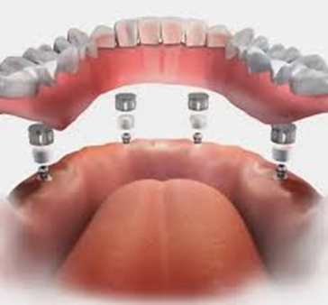
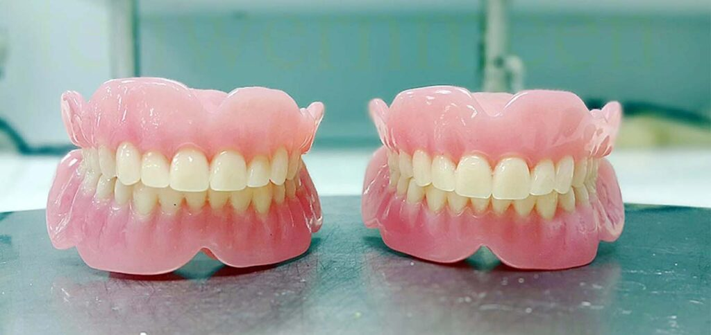
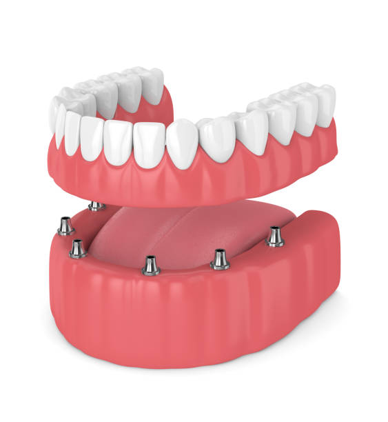

Complete Denture
A removable replacement for missing teeth, designed to restore your smile, improve chewing, and support your facial appearance with natural-looking comfort.
What is a
Complete Denture?
A denture is a removable replacement for missing teeth and adjacent tissues. It is made of acrylic resin or a combination with various metals. A complete denture replaces all the teeth within an arch — some patients have only an upper denture, some only a lower, and some have both upper and lower complete dentures.
A partial denture fills in the spaces created by missing teeth and prevents other teeth from changing position.
A conventional denture is ready for placement 8 to 12 weeks after the teeth have been removed. This waiting period allows gums to heal and the bony ridge to stabilise, ensuring a better fit.
Why Complete Dentures?
It is very important to replace missing teeth. The ill-effects of not doing so can be a shift in the remaining teeth, inability to bite and chew properly, and a sagging facial appearance that makes one appear older.
Complete Acrylic Dentures
Lightweight, natural-looking full dentures made from high-quality acrylic resin, crafted for comfort and aesthetic appeal.
Complete Metal Frame Dentures
Reinforced with a metal framework for superior durability and a slimmer, more stable fit compared to acrylic-only dentures.
Implant-Supported Overdentures
Attached to dental implants for unmatched stability, allowing greater chewing efficiency and eliminating the risk of slipping.
What are Implant
Supported Overdentures?
Unlike a conventional denture that sits on the gums, this type of denture connects to the jawbone by inserting dental implants into the bone for support. These are similar to conventional complete dentures — the key difference is that they are attached to dental implants to provide greater stabilisation during chewing.
Implant supported dentures are a good option for those who want a comfortable and stable tooth replacement that is more secure than removable resin dentures.
- Anchored securely to dental implants in the jawbone
- Replaces multiple teeth simultaneously
- Greater stabilisation during chewing
- More secure than conventional removable dentures

Benefits of Dentures
Natural Smile
A natural-looking smile with enhanced facial expression and confidence.
Proper Chewing
Enables proper chewing and digestion, improving overall health and nutrition.
Improved Speech
Restores clarity and confidence in speech and articulation.
Self Esteem
Restores self esteem, confidence, and a positive self-image.
Affordable
An affordable and cost-effective solution for full teeth replacement.
Facial Support
Supports facial muscles, preventing a sagging or sunken appearance.
Better Function
Allows better mouth functional activities, including biting and chewing comfortably.
Natural Look
Designed with modern aesthetics to closely mimic the appearance of natural teeth.

How to Care for Your Denture
- Remove & Rinse: Rinse dentures after every meal to remove food particles.
- Brush Daily: Use a soft-bristled denture brush and mild soap or specialized denture cleaner. Avoid harsh toothpaste and stiff brushes.
- Clean Mouth: Brush gums, tongue, and roof of mouth with a soft toothbrush to remove plaque.
- Remove Overnight: Remove dentures at night to give gum tissues a chance to rest and heal.
- Keep Moist: Soak dentures in a denture-cleansing solution or plain water overnight to prevent warping.
- Avoid Hot Water: Never use hot water, as it can warp the denture material.
- Don't DIY Repairs: Avoid attempting to adjust or fix dentures yourself, as this can damage them.
- Regular Checkups: See a dentist annually to check the fit and monitor oral health.
Why Choose
V Cure Dental?
At our clinic we consult with our patients and help them understand and decide which treatment is best suited for them, developing a personalized treatment plan that meets your specific needs and dental design.
- We provide high-quality dentures that are a perfect fit, ensuring maximum comfort and functionality.
- We use the latest techniques and equipment to provide safe, effective, and precise treatment.
- Patient-centred care is our top priority — we understand your concerns and answer every question you may have.

Reclaim Your Confidence
Take the first step towards a fully restored smile and improved quality of life. Schedule your complete denture consultation at V Cure Dental today.